System architecture. Every layer, what owns its data, and which direction the arrows point.
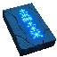
Authored numbers that define the game: unit stats, costs, map layout.
Plain text in design/, versioned in git, reviewed in a pull
request like code.
Holds two different things and treats them differently. Design data is a cache of the files and the files win on disagreement. Match records are generated, append-only, and never hand-edited.
owns match records mirrors design data gitignored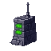
Python standard library only. Serves published design data read-only, accepts finished match records, returns replays. The game client can never write a unit definition; that path does not exist by design, not by oversight.
read-only to clients writes require a bearer tokenFetches definitions once into a frozen map and never mutates it.
Runtime units hold a unitTypeId and read through that cache
rather than copying stats, which would fork one definition into N silent
copies.
A pure function of state, commands and a fixed tick. No wall clock, no randomness that is not seeded, no knowledge of selection or animation. This is what makes replays, determinism and headless testing all the same capability.
owns runtime state fixed 1/60s tickRendering reads the simulation. It never writes to it. Animation runs on wall-clock time, the simulation runs on fixed ticks, and they are never the same clock. Age of Empires documented what happens when this is violated: machines with different frame rates diverge, the drift compounds silently, and the game declares itself out of sync with no traceable cause.
| Fact | Authored in | Copies | Rule |
|---|---|---|---|
| A soldier costs 5 gold | design/units/soldier.json |
database row, client cache, offline bundle, docs table | All four are generated. None may be hand-edited. |
| A match was won in 27.5s | the database | none | Append-only. Never edited, never deleted. |
| Where a unit is standing right now | simulation memory | none | Never persisted. Rebuildable from seed plus command log. |
Facing is derived from the movement vector and is purely cosmetic. It is never an input to combat, because a facing requirement would mean turn-to-face time, which would mean simulation state.
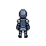
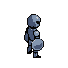
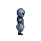
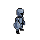
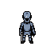
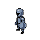
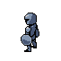
move animation stateFour frames on a 0.52s loop, driven by wall-clock time. The simulation does not know this exists and must never read it.
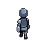
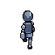
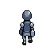
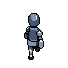
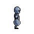
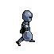
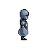
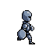
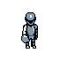
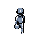
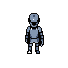
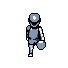
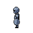
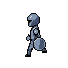
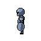
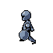
| # | Stage | Why the order matters |
|---|---|---|
| 1 | Apply commands due this tick | Input is data, so it can be replayed and tested |
| 2 | Resolve orders into destinations | A chase follows a target that is itself moving |
| 3 | Move, stopping short by the standoff distance | Units park inside their own range instead of oscillating on the boundary |
| 4 | Apply damage | Before the cull, so two units can kill each other on the same tick |
| 5 | Push overlapping bodies apart | A correction pass after all movement, not physics |
| 6 | Remove anything at or below 0hp | Before the outcome check |
| 7 | Evaluate victory, defeat, stall | Against what actually survived |
Honest state of each layer as of 2026-08-11.
| Layer | State |
|---|---|
| Simulation | built and tested, 12 assertions, negative-controlled |
| Client rendering | built, canvas 2D, coloured shapes not yet sprites |
| Controls | built but untested, no coverage of mouse input at all |
| Design data | specified, not built, still hardcoded in the page |
| API server | specified, not built |
| Database | specified, not built |
| Sprites and animation | art exists, not wired into the game |